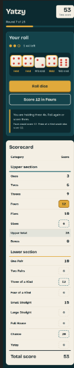

Working with Children
Extensive experience leading children in structured and non structured activities through volunteering and school.
Business Systems Development Student
Nepean, ON | 613-266-7276 | danica@casagreenfield.ca
Extensive experience leading children in structured and non structured activities through volunteering and school.
Takes on whatever role is needed to meet deadlines, including VP of Finance in Grade 12 Business Leadership.
Experience using Java, Python and C/C++, SQL/MySQL.
Web development with HTML, CSS, JavaScript, jQuery, Node.js and Express.
Experience using Microsoft Windows applications: Word, Excel and PowerPoint.
A browser-based version of the dice game Yatzy. Players roll five dice up to three times a turn, hold the ones they want and fill a 15-category scorecard. It was built in two stages: a designed, client-only game (Assignment 1), then a version with a Node.js server (Assignment 2).
Assignment 1 produced the design system, dice design and HTML/CSS mock-ups, plus the game logic in JavaScript. Assignment 2 moved that logic to an Express server so the server owns the game state, rolls the dice and checks every rule. The browser only draws the interface and sends the player's actions with the Fetch API.




| Technology | How I used it |
|---|---|
| jQuery | Loaded from a CDN with a Google CDN fallback. Its .animate() method spins the dice, and it handles DOM updates and events. |
| JSON & Fetch API | Every roll, hold and score is a request to the server. Bodies and replies are JSON. |
| Node.js & npm | Runs the server-side game logic and manages the Express dependency (npm install, npm start). |
| Express.js | Creates the server, serves the public/ client files and defines the RESTful API routes. |
| MVC-style separation | Game rules live in game/ (model), routes in server.js (controller) and the interface in public/ (view). |
| JavaScript DOM | The interface is redrawn from the server's state object after every action. |
| Async / await | Used with fetch so rolls and scoring never freeze the page while the server replies. |
| JavaScript & CSS animation | Dice tumble with small rotations, and they stop one by one, 150 ms apart. Reduced-motion users skip the animation. |
| VS Code & GitHub | VS Code for editing. GitHub for version control, with the work committed to my portfolio repository. |
The dice, scoring and game files ran in the browser, and state lived in JavaScript variables on the page.
The same files now run in Node. State lives in a Map on the server, one entry per game, and main.js calls the API with fetch.
assignment2/
├── server.js Express app + REST API routes
├── package.json dependencies and npm scripts
├── game/ game logic (server side)
│ ├── dice.js rolling and holding dice
│ ├── yatzy_engine.js scoring rules and score table
│ └── yatzy_game.js rounds, rolls per turn, game over, best score
└── public/ client, served statically by Express
├── index.html
├── style.css
└── main.js UI + Fetch API calls
POST is used for actions that are not repeatable (a roll gives new random dice every time).
PUT sets something to a known value, so repeating it is harmless.
GET only reads and DELETE removes a game.
| Method | Endpoint | Purpose | Success |
|---|---|---|---|
| POST | /api/games | Create a new game | 201 + state |
| GET | /api/games/:id | Read current state | 200 + state |
| POST | /api/games/:id/roll | Roll all dice that are not held | 200 + state |
| PUT | /api/games/:id/dice/:index/hold | Hold or release die 0 to 4 | 200 + state |
| POST | /api/games/:id/score | Lock the current dice into a category | 200 + state |
| PUT | /api/games/:id/restart | Restart, keeping the best score | 200 + state |
| DELETE | /api/games/:id | Delete the game | 204 |
Errors always return { "error": "message" } with a status code:
400 for a bad request, 404 when a game or route is not found,
and 409 when an action breaks a game rule, such as a fourth roll in one turn.
POST /roll and the server rolls all five dice.PUT .../hold.The game has its own palette and fonts, separate from this portfolio. Headings use Bricolage Grotesque for a playful feel. Body text and scores use Atkinson Hyperlegible, which keeps letters and numbers easy to tell apart.
#0C2A30#14434B#2A6A73#F4EFE4#C8372D#E0A93BDice are 88 px on desktop and shrink to 56 px on a phone, using Flexbox and media queries.
Rolls and scoring use async/await, and the buttons and scorecard lock while the dice spin so a second action cannot slip in.
The client holds no rules. Even the potential scores come from the server, so the two can never disagree.
The server rolls the real values first. The animation only decorates, then every die settles on the server's value.
Not everything from the course fit into the Yatzy game, but it all shapes how I build. This page itself uses several of these practices.
HTML, CSS and JavaScript, from static pages to dynamic web applications.
SCSS adds variables and nesting to CSS. Bootstrap and Tailwind CSS showed me two approaches to responsive design: ready-made components and utility-first classes.
RESTful design for web services, and the HTTP and TCP/IP protocols underneath them.
WCAG, semantic HTML and ARIA roles so content works for everyone. This page has a skip link, labelled sections, visible keyboard focus and reduced-motion support.
Layouts that work across devices, browsers and screen sizes, built with Flexbox, media queries and relative units.
Colours, fonts and components are written down in a Markdown README and reused across pages through CSS custom properties.
Algonquin College · September 2025 - present · Expected graduation 2029
St. Mother Teresa High School, Ottawa, ON
Obtained the Certificat d'études en français
2022 - 2025
2020 - 2021
2019 - 2020
2023 - 2025
2022 - 2023
2021 - 2022
2018 - 2019